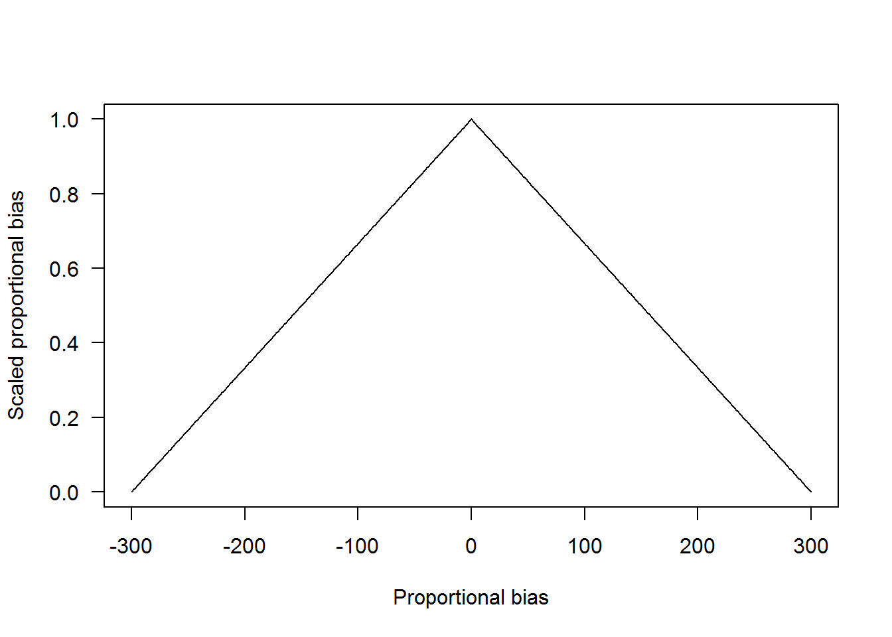
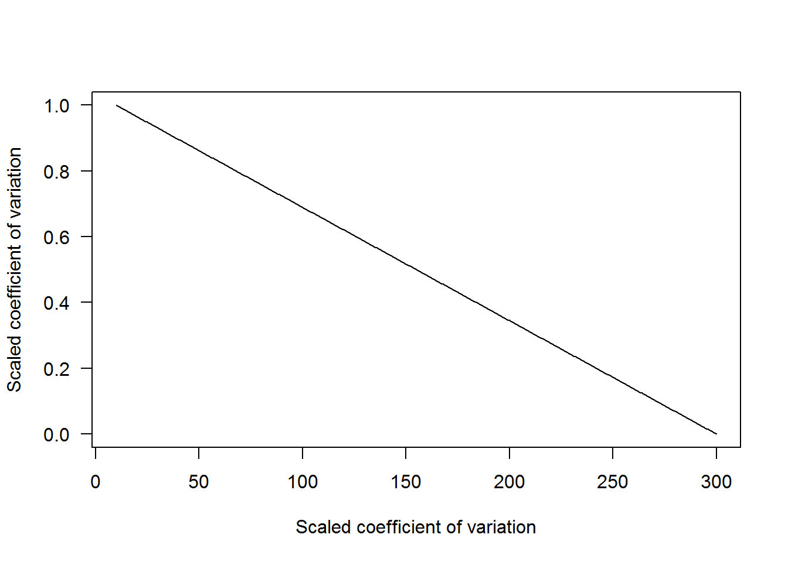
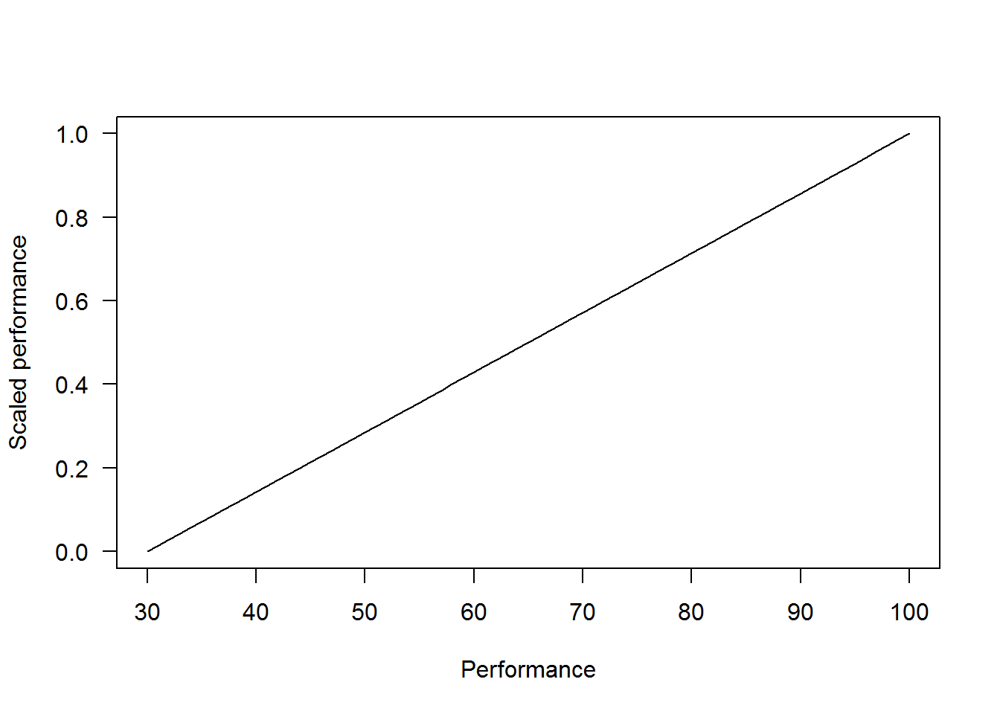

The process for the evaluation of the PSPAP is intended to be transparent and objective. In previous posts, we provide some technical overviews of identifying some of the uncertainties (i.e., demographic closure) that can influence the performance of alternative monitoring designs. For example, in simulations of a capture-recapture estimator, violating the closure assumption can bias population estimates.1 We used bias to evaluate the consequence of violating an assumption, but we can also use it to evaluate how well a monitoring design performs. The purpose of this post is to discuss how we can link simulated monitoring designs to agency objectives. Caveat: this post is a simplification of the analyses being conducted and is intended to provide an overview of the process and solicit input.
Want to engage in the process? Please let us know what you think in the comments area below or email mike.colvin [at] msstate.edu. Specifically, we are interested in, when we evaluate the performance of a monitoring design, are there
Let’s look at how we can quantify one of the fundamental objectives for the PSPAP going forward, specifically the objective to:
Quantify population trend.
In simulating population monitoring designs, we are using 3 metrics to quantify how a monitoring design meets the objective of quantifying population trend. Specifically, the estimates from a monitoring program, as it relates to trend are evaluated by calculating:
The 3 metrics described above can be combined into a single metric—commonly referred to as a utility—representing the objective to quantify population trend (Conroy and Peterson 2013). The utility is then used to evaluate alternative monitoring programs. However, one problem we run into with the metrics above is that they are on different scales. Bias can be negative or positive with values approaching 0 being best, precision is a positive number varying from 0 (best) to potentially large numbers (worst), and conformance is constrained between 0 (worst) and 100 (best).
To convert the 3 metrics to a common scale we can use methods like proportional scaling which normalized values to a specified minimum and maximum. For example, we can scale the bias to values varying from 0 to 1 as:
\[U=\frac{|bias|-max(|bias|)}{max(|bias|)-min(|bias|)}\],
where \(|bias|\) is the absolute value of bias. We use absolute value here because we are assuming negative and positive bias are equally bad regarding satisfying the objective to quantify population trend. In the plot below, values with lower proportional bias are given higher values, and increasing values approach 0.

Now let’s look at the precision metric. Suppose it varies from 10 to 300 (not very precise). The equation to calculate scaled precision is the same as before. However, we do not need to take absolute values since all values are positive. In the plot below, values with lower CV values have higher values, and increasing values approach 0.

Lastly, let’s look at conformance. Suppose performance values from simulating multiple replicates of each monitoring design vary from 35% to 100%. The difference between the performance metric with bias and precision is that higher values are more desirable and therefore we need to rearrange the proportional scaling equation to reflect this as,
\[U=\frac{Performance-min(Performance)}{max(Performance)-min(Performance)}.\]
In the plot below, values with lower performance values have lower values and increasing values approach 1.

We can combine the utility values now such that monitoring designs resulting in a trend estimate with low bias, good precision, and good performance have higher values (i.e., approaching 1) and estimates of the trend that is biased, imprecise with poor performance approach 0. Values approach 1 because each of the scaled metrics is weighted. For example, if each metric is valued equally, then the weights would be 1/3. Alternatively, if really precision estimates of trend were desired the weight for scaled trend could be 0.5 and the remaining metrics weighted at 0.25. Suppose this last weighting scheme is the case and the output from 2 monitoring programs, a catch effort based and capture recapture program, are the values below.
The scaled utility for the catch effort program is:
\[0.774= 0.25\cdot 0.8+ 0.50 \cdot 0.648+ 0.25\cdot1,\]
and the scaled utility for the capture recapture program is
\[0.779= 0.25\cdot 0.983+ 0.50 \cdot 0.638+ 0.25\cdot0.857.\]
The combined utility values indicate that the capture recapture program has more value to achieve the objective of quantifing population trend.
This was an example outlining how alternative monitoring programs can be objectively evaluated and compared in the context of meeting agency objectives. Many uncertainties remain in Pallid Sturgeon population dynamics and capture that will need to be accounted for. Additionally, the weighting of utility values can be a treacherous territory and how metrics are weighted can drive outcomes. However, sensitivity analyses can be conducted to evaluate the influence of weighting on outcomes. This process of evaluating alternative monitoring programs is designed purposely to be as objective as possible and therefore formally linking the outcomes of alternative monitoring designs to agency objectives with quantifiable metrics is necessary.
Conroy, M., and J. Peterson. 2013. Decision making in natural resource management: A structured, adaptive approach. Book, Wiley.